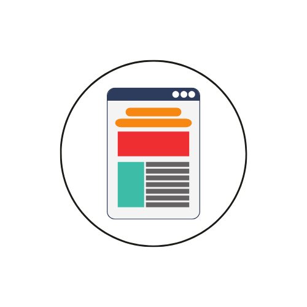

Follow These Steps to Success

Step 1: Choose Your Project Type
Decide whether your project is for personal satisfaction, business, or career growth.

Step 2: Select a Template
Browse and choose a customizable template to fit your needs.
Step 3: Customize & Organize
Use the STAIRS tools to edit, plan, and structure your project.
Step 4: Track Your Progress
Monitor your progress using Kanban boards, task lists, and analytics.
Step 5: Share & Collaborate
Connect with the STAIRS community for feedback and support.